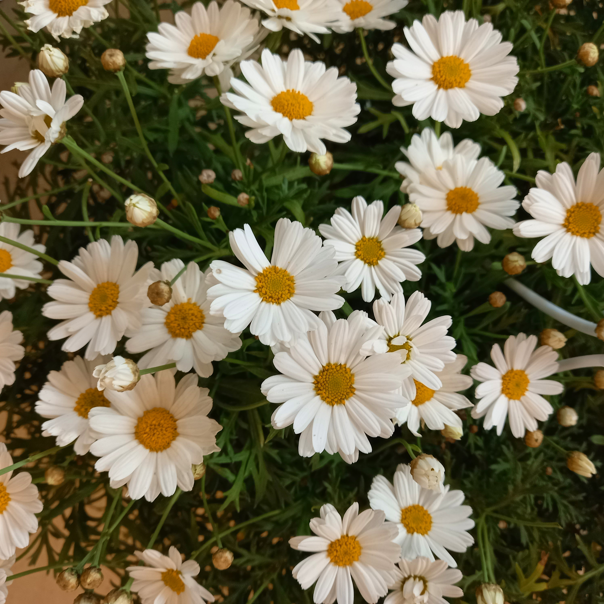
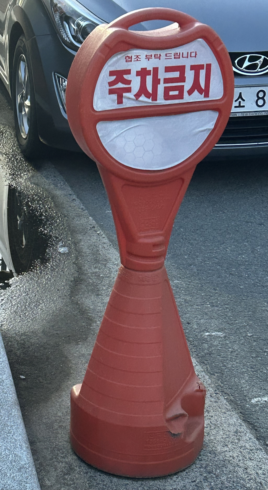

녹색 식물이다. 초록색이 인간에게 주는 심리적 효과는 나무와 숲을 연상시켜 마음을 평온하게 하는 것이다. 초록색의 식물을 보니 '자연', '건강'이라는 단어가 떠오른다.
흰색과 노란색을 가진 꽃이다. 흰색의 특징은 결백, 신성, 순결 등이 있다. 하얀 꽃잎이 순수한 느낌을 준다.

푸른 하늘이다. 파란색은 싱그럽고 시원함을 나타낸다. 파란 하늘을 보면 '여름'의 계절감과 상쾌함이 떠오른다.
파란색을 가진 음료수이다. 파란색은 기분을 진정시키는 효과가 있어 진정되는 느낌을 받는다.
거의 대부분의 화장실 표시가 여성은 빨간색, 남성은 파란색으로 되어 있다. 하지만 이처럼 어떤 색이 어떤 성별을 대표하게 하는 것 대신 같은 색으로 표현하면 어떨까.
여성 아동복은 분홍색 옷을 압도적으로 많이 판매하고 있는데 여자아이라면 반드시 분홍색을 좋아할 것이라는 것도 편견이라는 생각이 들었다.
많은 문화권에서 검정을 불행하고 부정적인 색상이라고 생각해 검은 고양이를 좋아하지 않는다. 검은색이 주는 심리적 효과 중 사람을 의기소침하게 만든다는 것도 하나의 이유라고 생각한다.
샌드위치를 파는 가게의 간판이 초록색이다. 초록색이 자연친화적인 느낌을 주기 때문에 채소가 많이 들어가는 샌드위치와 잘 어울린다.
마라탕 가게의 간판 속 글씨가 붉은색으로 적혀있다. 초록색과는 반대로 빨간색은 자극적이고 매운 붉은색 마라탕과 잘 어울린다.
붉은색의 주차금지 표지판이다. 붉은색은 강렬한 인상을 주고 사람들의 주의를 끈다. 경계와 위험을 나타내는 색이기에 금지하는 표지판에 사용했을 때 효과가 좋다.